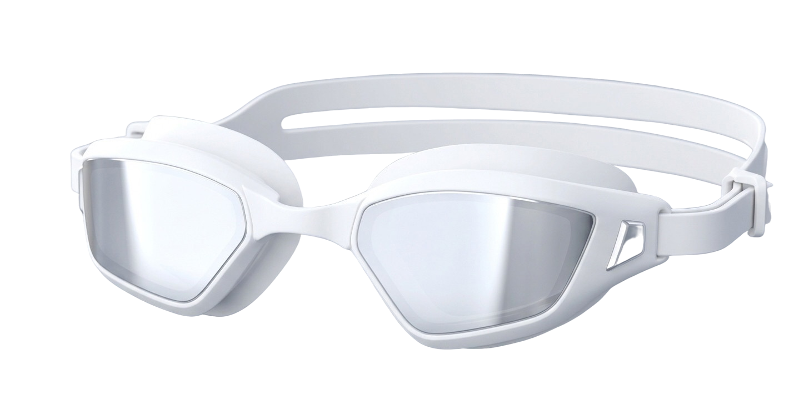
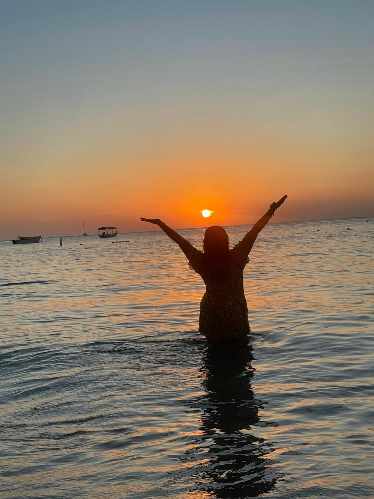
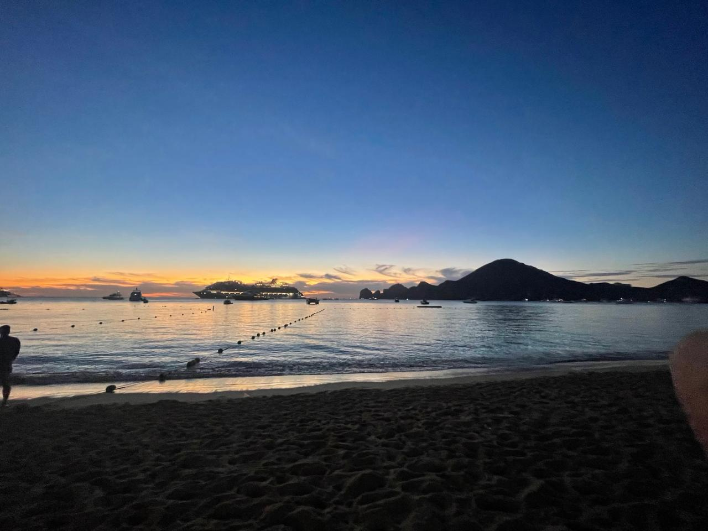
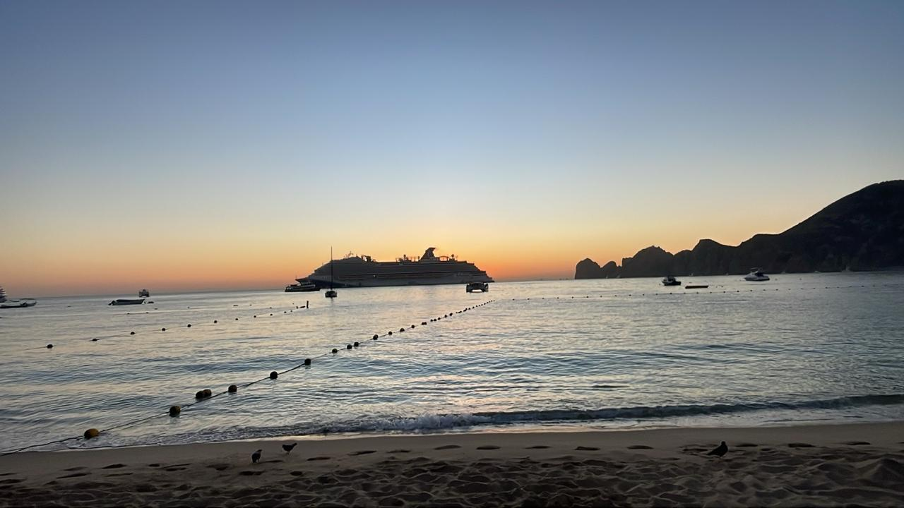
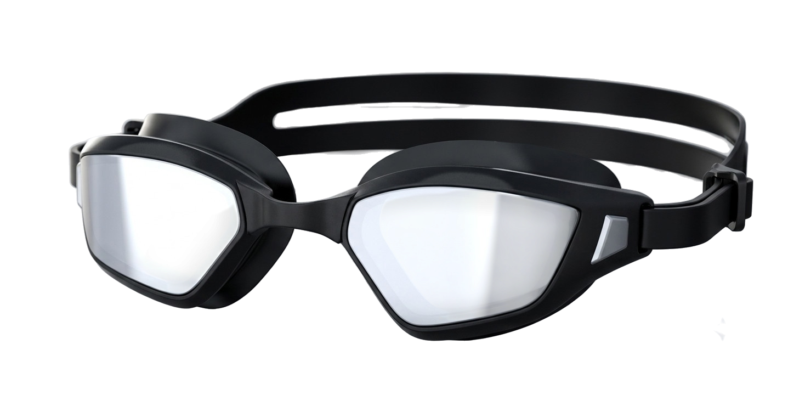
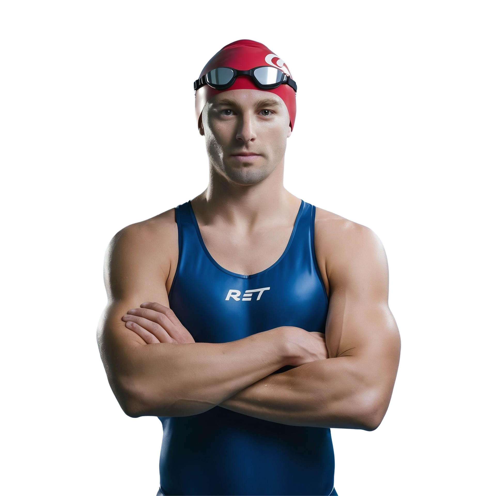
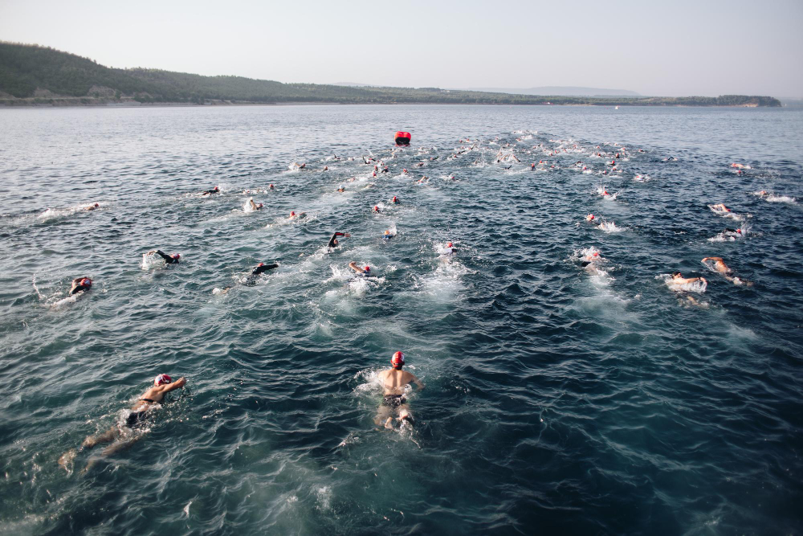

Edición Blanca

Edición 01
White
- PerfilBajo / anti-arrastre
- HebillaLiberación rápida
- SelladoAnti-empañante
- Uso recomendadoSprint - Full
Goggles diseñados para quien sale del carril y entra al mar, al lago o al río. Visión periférica amplia, sellado que resiste el frío y una óptica pensada para sesgar contra el sol de la salida.
El agua abierta no perdona errores de fabricación. Cada goggle Ketheryon se prueba en condiciones reales antes de llevar el nombre.
Curvatura de lente diseñada para ampliar el campo periférico, clave para ubicar boyas y nadadores sin perder el ritmo de brazada.
Empaque de silicona de doble densidad que mantiene el sellado en agua fría y con el movimiento constante del oleaje abierto.
Hebillas de liberación rápida y ajuste sin herramientas, para que la salida del agua a la bicicleta no reste segundos.
 Adáptate al agua
Adáptate al agua
Hay momentos en los que el mar pone a prueba cada decisión, cada respiración y cada brazada.
KETHERYON nació precisamente de esa experiencia. No surgió en una oficina ni detrás de un escritorio; nació entre amaneceres frente al océano, entrenamientos en aguas abiertas y el deseo de crear un producto diseñado por quienes realmente viven el deporte.
La palabra KETHERYON representa transformación, adaptación y renacimiento. Porque el agua nunca lucha contra los obstáculos; los rodea, se adapta y continúa avanzando. Esa misma filosofía inspira nuestra marca.
Nuestro símbolo, la ballena, representa fuerza, libertad, inteligencia y conexión con el océano. Es un recordatorio de que los grandes desafíos no se vencen con fuerza bruta, sino con constancia, disciplina y respeto por el entorno.
Cada modelo de KETHERYON está pensado para acompañar a nadadores, triatletas y amantes del mar que buscan algo más que unos goggles. Buscan confianza, rendimiento y la sensación de pertenecer a una comunidad que entiende que cada entrenamiento es una oportunidad para superarse.
La incorporación gradual de materiales de mayor durabilidad, procesos productivos con menor impacto ambiental, empaques reciclables y acciones orientadas a la conservación de los ecosistemas marinos fortalece la identidad de la empresa y la diferencia dentro del mercado de artículos deportivos especializados.
Desde las aguas de Los Cabos hasta cualquier rincón donde exista alguien dispuesto a desafiar sus límites, KETHERYON tiene una misión:
Misión
Diseñar el mejor equipo para natación de aguas abiertas, triatlón y aventura marina, combinando innovación, comodidad y una identidad inspirada en el océano.
Visión
Convertirse en la marca latinoamericana de mayor reconocimiento en goggles para aguas abiertas y triatlón.
Inspirar a las personas a adaptarse, evolucionar y renacer en cada reto.
Porque el agua cambia de forma, pero nunca pierde su esencia.



Elige según tu distancia y tu disciplina. Incluyen funda y ajuste de nariz intercambiable.

Edición 01

Edición 02

La curvatura de la lente amplía el campo periférico sin distorsionar la distancia a boyas o embarcaciones de apoyo.
Una capa firme sostiene la forma; una capa suave sella contra el rostro incluso con agua fría o movimiento del oleaje.
Tratamiento interno que resiste más lavadas que el recubrimiento estándar, pensado para entrenamientos largos.
Respuestas directas de quienes ya los probaron en agua abierta. Se irán completando con cada nueva reseña.
No, de hecho tiene un sellado que evita que entre agua y se pega correctamente al contorno del ojo.
Sorprendentemente no, el recubrimiento se mantuvo aún en agua fría.
Absolutamente no, se pego correctamente al contorno de los ojos.
No, no causo ninguna distracción durante el entrenamiento.
Sí, lo usaría en competencia, ya que es donde debo usar lo mejor para tener grandes resultados.
Testimonios de nadadores y triatletas que entrenan en aguas abiertas de forma regular.
"Dejé de perder la boya de vista a media travesía. La diferencia está en cuánto se ve por los costados."
"El sellado aguantó una hora en agua a 14°C sin filtrarse ni una vez."
"Salgo del agua, tiro de la hebilla y ya estoy poniéndome el casco. No pierdo tiempo ajustando nada."
Opinión de un atleta de aguas abiertas.

La selección mexicana lidera la región y Cancún se prepara para la Copa del Mundo.
México se proclamó campeón de aguas abiertas en los Juegos Centroamericanos y del Caribe de Santo Domingo con 3 oros, 2 platas y 2 bronces...
Encuentra al equipo Ketheryon en el agua. Encuentranos en los mejores eventos.